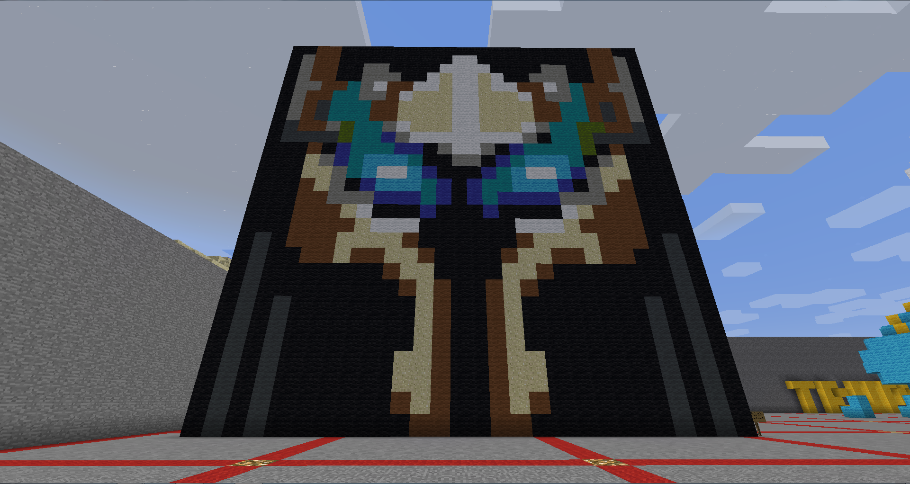
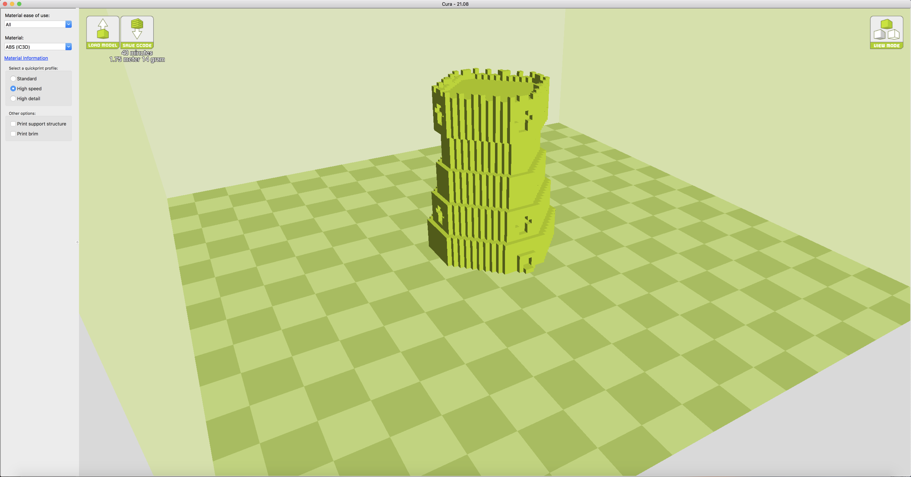
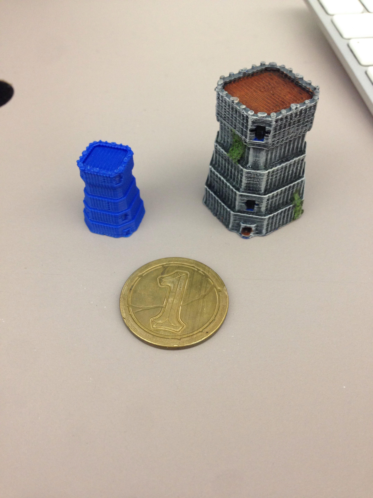

Minecraft Sculpture Series: Warcraft Plate Helm Icon (above) and Castle (below)
This is an icon from Warcraft III and later World of Warcraft. This icon was one of the more heavily used in both games and people in the "Warcraft fan" sub-culture might be able to recognize it fairly quickly as the icon for the Revenant class of neutral-hostile enemies, and often used as an icon for plate mail head armor without a unique icon or model. These kinds of 56x56 pixel icons are used throughout both games to quickly give players the gist of what an item is or does at a very quick glance. If the player mouses over the icon, they get further information, but these icons are memes in a way. This one being commonly used to give the player an idea that they have just picked up a magical plate helmet or, in the earlier game, that they are going to summon a powerful elemental creature. This icon is officially named "inv_helmet_06." The second work is called Castle Sculpted because it was intended for use in another project where it would be 3D printed. This is intended to resemble a rook or castle chess piece.
 
Castle Sculpted (top), Castle Rendered (middle), Castle Final (below).
Here I've taken the Minecraft sculp from the previous project, and extracted it using a program called Mineways, then put into another program called Meshmixer to weld the shared edges. Finally it was put into a third program called Cura to connect to the Lulzbot 3D printer. It was then printed, first as a demo piece that took 16 minutes and then as a final piece that took 40 minutes. I then used Warhammer painting skills I acquired a long time ago to make it look resentable as a rook or a castle chess piece. In order to produce this work I made a somewhat symmetrical octagon and built it up four layers while reducing its size inwards by one unit each, except for the final layer on the top which increases one unit outwards. Each flat edge is ten units long and each jagged edge is also ten units long at the largest octagon. I had seen other works printed and noticed they all had this layered texture on each side built up and a striped texture along the top flat parts. I thought this would look great on a cobblestone castle tower because I could work with the medium instead of having to do cleanup work, the layers look good as stacked stone brick layers and the stripes look good as wooden boards. So I painted it using different shades and drybrushing to build the layers up, washed it with dark wash, and applied some textured moss paint to add moss accents with more drybrushing to make them more colorful. Thie piece is intended as a functional game piece for a game like Chess or Warhammer. Scaled up it could be an interesting piece of scenery or part of a ceramic miniature holiday village your well-off aunt or grandma would collect from Michaels craft stores. Castles are often seen in fantasy games, movies, and books. As a side note, this is also a sort of homage to my culture. My ancestors were scottish peasants and built castles and that's how we get the name, Cassell (pronounced 'castle').